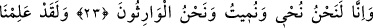

BİZ DİRİLTİR
BİZ ÖLDÜRÜRÜZ
23. Şüphesiz Biz diriltir ve Biz öldürürüz! Ve her şeye Biz vâris oluruz.
24. Andolsun Biz, sizden önce gelip geçenleri de biliriz, geri kalanları da biliriz.
25. Şüphesiz Rabbin onları (kıyâmette) toplayacaktır. Çünkü O, hakîmdir, alîmdir.
“Şüphesiz Biz diriltir” yaşamaya elverişli bazı cisimlerde hayâtı var ederiz “ve Biz
öldürürüz.” Bu cisimlerden hayat vasfını izâle ve yok ederek onları öldürürüz.
Öldürme ve yaşatma fiilleri kimi zaman canlıları ve bitkileri içine alır. Allah Teâlâ,
ilkbahar günlerinde yeryüzünü yağmurlarla diriltir ve sonbahar günlerinde de öldürür.
Allah îmân ile diriltir ve küfür ile öldürür.
Kuşeyrî’nin Letâif’inde zikredildiğine göre Cenâb-ı Hak şöyle buyurur: ‘Gönüllere
ilâhî nûru müşâhede ile hayat veririz. Nefisleri mücâhede ateşi ile öldürürüz. Ya tâat
vakitlerinde diri kılarız, ya da şehvetlere uymakla ölü ederiz.’
Hz. Şeyh-i Ekber (k.s.)’in mânevî oğlu Sadreddin Konevî (k.s.)’a söylediği
sözlerden birisi de şudur: “Evlâdımdan ve arkadaşlarımdan nicelerini (mânevî olarak)
öldürüp dirilttim. Kimisi öldü kimisi de öldürüldü. Fakat sana nasib olan derece
bunların hiçbirine nasib olmadı. Bu derece dâim ve ebedî ilâhî zât tecellîsini müşâhede
(şühud) etmektir. Bundan sonra artık hiçbir hicab ve kâmiller için başka karar kılacak
bir yer yoktur.” Bunun üzerine Sadreddin (k.s.) şöyle dedi: “Efendim, bu fazileti sâdece
bana nasib etmesinden ötürü Rabbime hamd ederim.” Bu mes’elenin geniş açıklaması
Fususu’l-Hikem şerhinde mevcuddur.
İmam Gazzâlî (r.h.) der ki: “
el-Muhyî (hayat veren)” ve “
el-Mümît
(öldüren)” isimlerinin mânâsı, “
el-Mûcid (var eden)”dir. Ancak bu varlık hayat
olursa, bunu yapmaya ‘ihyâ/yaşatma’ adı verilir. Ölüm olunca ise bunu yapmaya
‘öldürme’ adı verilir. Allah dışında ölümü ve hayâtı yaratan bir varlık yoktur. Şu halde
bu iki isim, fiilî sıfatlarla ilgilidir.
“Ve her şeye Biz vâris oluruz.” Geride kalana ölünün vârisi (mirasçısı) denir. Çünkü,
onun yok oluşundan sonra o geride kalır. O zaman mânâ şöyle olur: Bütün
yaratılmışların yok oluşundan sonra bâkî kalan Biziz. Mecâzî mülk sona erdiği zaman
mülkün mâliki Biziz. Önce de sonra da her şeye hakim olan Biziz. Onların sâdece